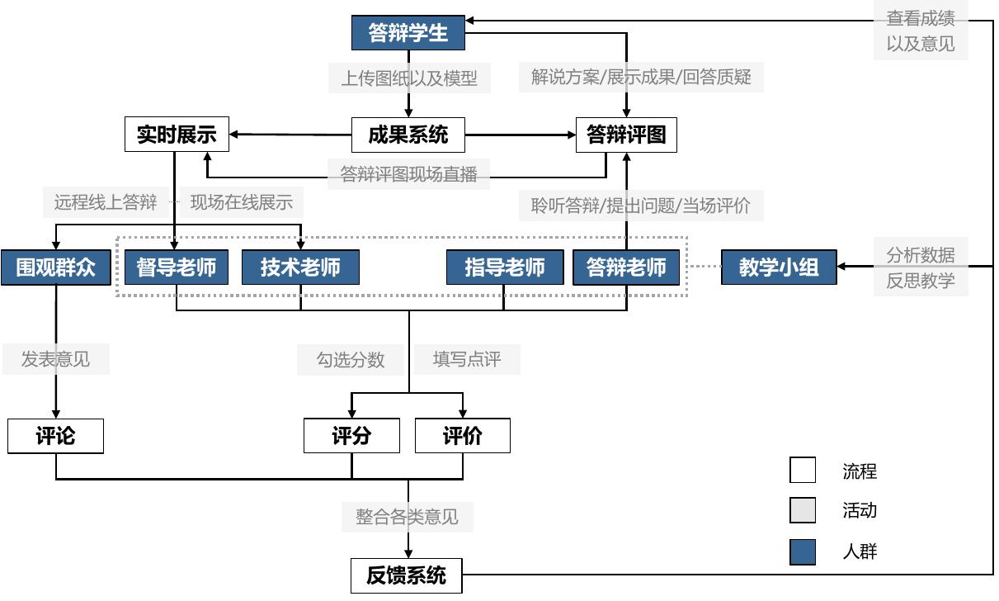

Fragmented workflow
Hanging drawings, presentation, assessment, and exhibition happened sequentially, making information difficult to revisit or share.
基于VR/AR/MR的校园信息展示交流空间架构——以建筑学院评图体系及展图空间为例
An integrated XR framework that rethinks how architectural work is presented, reviewed, discussed, and archived across physical and online environments.
The project examined how virtual, augmented, and mixed reality could upgrade the architectural review and exhibition system at the School of Architecture, Southeast University. Taking the first-floor exhibition hall of the Qiangongyuan building as its main site, the team investigated how XR could connect physical drawings and models with interactive digital information.
项目以东南大学建筑学院日常评图、展图活动为研究对象，针对传统流程单向、展示媒介静态、反馈信息分散及空间使用受限等问题，提出一个整合活动流程、软硬件设备、空间原型与线上界面的XR评图展图体系。
Hanging drawings, presentation, assessment, and exhibition happened sequentially, making information difficult to revisit or share.
Printed boards and physical models could not fully communicate spatial experience, material atmosphere, or environmental change.
Parallel reviews and enclosed spaces restricted peer learning, remote participation, and communication between students and reviewers.
Scores, comments, presentations, and teaching reflections lacked a shared platform for comparison and long-term analysis.
The proposal reorganised architectural review around a shared information platform. Students upload drawings and models; reviewers annotate, score, and compare work; visitors access exhibitions and discussions; and teaching teams use accumulated feedback for reflection.

VR supported immersive walkthroughs and material testing; AR linked drawings and physical models to three-dimensional information; MR connected virtual proposals with existing sites and enabled remote model sharing.
Foldable digital display panels, movable AR model tables, VR experience zones, and reviewer workstations translated XR capabilities into architectural exhibition infrastructure.
Student uploads, model interaction, reviewer scoring, result enquiry, online exhibitions, and community discussion were organised into one connected digital workflow.
Flexible layouts combine digital panels, AR model tables, and immersive views for construction, integrated design, and adaptive-reuse studios.
A larger open area supports walkable VR experiences and 1:1 spatial demonstrations while surrounding displays present supporting work.
AR/MR overlays visualise proposed interventions in their real context and communicate scale, position, and old-new relationships.
Students, reviewers, and observers access role-specific interfaces for remote presentation, model interaction, scoring, and discussion.
Click to enlarge. Use the arrows or swipe to browse; press Esc or × to close.
 Complete project poster · 项目完整海报
Complete project poster · 项目完整海报
 Outdoor MR · virtual proposal in its campus context
Outdoor MR · virtual proposal in its campus context
 Digital exhibition panels in the review hall
Digital exhibition panels in the review hall
 Courtyard · immersive spatial experience
Courtyard · immersive spatial experience
 VR · experiencing architectural interiors
VR · experiencing architectural interiors
 AR · linking drawings with virtual models
AR · linking drawings with virtual models
 MR · visualising proposed interventions
MR · visualising proposed interventions
 Student interface · uploading design work
Student interface · uploading design work
 Interactive digital model interface
Interactive digital model interface
 Online architectural review interface
Online architectural review interface
 Activity workflow · participants and feedback
Activity workflow · participants and feedback
Design outcomesAn integrated activity and platform framework; VR, AR, and MR technology prototypes; foldable displays, XR experience spaces, AR model tables; online review interfaces; four application scenarios; presentation boards and animation.
Conference paperReal Communication in Virtual Space: A Preliminary Concept for Online Architectural Review Teaching Based on XR Technology, presented at the 2020 International Symposium on Architectural Education and National Conference of Deans and Department Heads of Architecture Schools.
Later researchThe project established an early research foundation for examining XR in architectural design education.